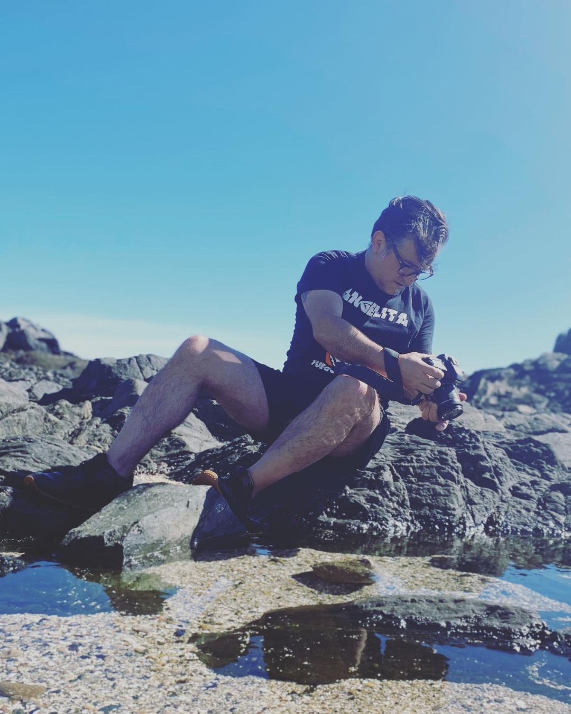

Servicios
Redes Digitales:
Narrativa visual para proyectos culturales, artísticos, científicos y educativos
Desarrollamos identidades digitales a través de estética, storytelling y comunicación visual, respetando la esencia y lenguaje de cada proyecto.
Kits Visuales para redes sociales
Diseñamos y creamos plantillas, línea gráfica, packs de historias, portadas y recursos visuales para emprendedor@s/artistas/creadores de contenidos.

